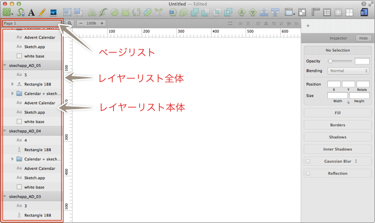
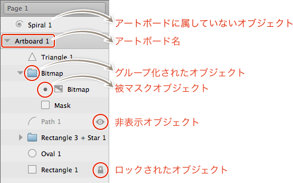
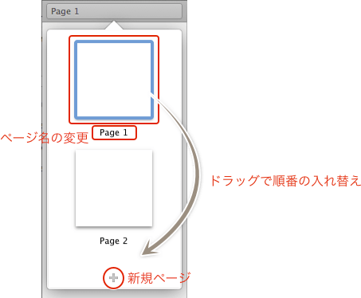

Sketch.app Advent Calender 2013 6日目の記事です。
今回はSketch.appのレイヤーリストについての解説をお届けします。初回にアプリケーションウィンドウを紹介しましたが、その続きといえばそんな感じです！
Sketchの基本。というSketch（Sketch 3）の基本操作にフォーカスした電子書籍をリリースしました。詳しくはこちらの「Sketchの基本。」のページをご覧ください。
この記事はSketch 2を元にした記事です。最新版の動作とは異なる可能性が高いため、参考程度にご覧ください。
レイヤーリストには、レイヤーリスト部分とページリスト部分があります。

レイヤーリスト
1回目でザックリ解説した通り、リストにはアートボードやオブジェクトの一覧とその状態が表示されます。ちなみに、シェイプやテキストなど本来は「レイヤー」なのですが、あえてオブジェクトと記述しています。
オブジェクトを選択している場合、Tabキーを押すと順番に選択できます（＋Shiftキーで逆順になります）。
レイヤーリストの表示/非表示は、Command＋Option＋1のショートカットが割り当てられています。

ディバイダー（アートボード）
リスト上の区切りのようなものが、アートボードです。左の三角マークでリストを開閉します。閉じている場合でも、内包するオブジェクトが選択されれば、勝手に展開します。
ちなみにここでオブジェクトを含めたアートボード全体を選択できるので、オブジェクトごと複製したり、アートボード編集モードにしなくても移動したり、サイズを変更したりできます。（ただ、Tabキーでは選択できないので、ポインタで選択する必要がありますが）
アートボードに属していないオブジェクトは、リストの最上部に表示されます。オブジェクトをアートボードの外に移動させると、ここに移動します。まれにコピペしたオブジェクトもここに表示されます。
フォルダマーク
グループ化されたオブジェクトです。選択中にEnterキーで展開、Escキーで閉じることができます。
グループ化される際に、選択しているオブジェクト名が「+」で繋がれて、その名前になります。
ちなみにグループ化のショートカットはCommand＋G、グループ解除はCommand＋Shift＋Gです。
ビュレット
マスクされているオブジェクトです。ビュレットが付いている一番下のオブジェクトのさらに下がマスクです。
鍵マーク
ロックされたオブジェクトです。ショートカットCommand＋Shift＋Lで、ロックと非ロックを切り替えます。ロック時は、Tabでの選択はできません。
アイマーク
非表示になっているオブジェクトです。ショートカットCommand＋Shift＋Hで、表示と非表示を切り替えます。非表示時は、Tabでの選択はできません。
ロックや非表示になっているオブジェクトも、レイヤーリストから選択しプロパティを変更することができます（いちいちロック解除などをしなくてOK）。
ページリスト

Fireworksのように、1つのドキュメントに複数のページを持つことができます。レイヤーリストの上にプルダウンメニューがあり、そこからページの編集を行います。
ページリストの下にある＋マークでページの追加、削除はコンテキストメニューから「Delete Page」を選択します。ドラッグによる順番の変更やコンテキストメニューからページの複製やページの名称変更もできます。ページ名はダブルクリックなどをしなくても、そのままページ名の入力が可能です。